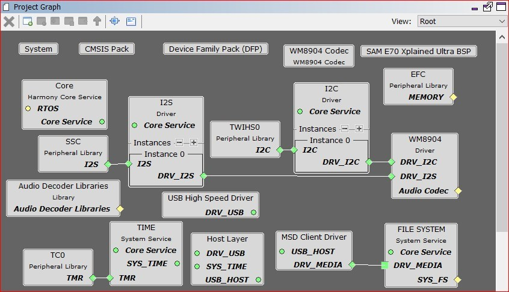

Demonstration Features
USB MSD Host Client Driver (see USB MSD Host Client Driver Library)
microSD card
FAT File System (see File System Service Library)
Audio real-time buffer handling
WM8904 Codec Driver (see Audio Codec Driver Libraries)
I2S usage in audio system (see I2S Driver Library)
DMA (see DMA Peripheral Library)
Timer (see Timer Peripheral Library)
GPIO Control (see Port Peripheral Library)
Harmony Configuration
- 1.
Add BSP->SAM E70 Xplained Ultra BSP
- 2.
Add Audio->Templates->WM8904 Codec a. Yes to all popups.
- 3.
Add Libraries->USB->Host Stack->MSD Client Driver a. Yes to all popups.
- 4.
Add Harmony->System Services->FILE SYSTEM
- 5.
Remove FreeRTOS if Bare Metal or Graphics versions.
- 6.
Add Harmony->Audio->Decoder->Audio Decoder Libraries
- 7.
Connect MSD Client Driver: DRV_MEDIA to FILE SYSTEM: DRV_MEDIA
- 8.
Connect WM8904 Driver:DRV_I2S to I2S Driver:DRV_I2S
After reorganization, your graph would look similar to one of the following project graphs. They specify the drivers, services, and libraries being brought into the project to further extend the applications abilities.

Fig 2 (Project graph of the default E70 bare metal configuration using the SSC)
Fig 3 (Project graph of the E70 FreeRTOS configuration using the SSC)

Fig 4 (Project graph of the E54 bare metal configuration using the I2S)
Fig 5 (Project graph of the E54 FreeRTOS configuration using the I2S)